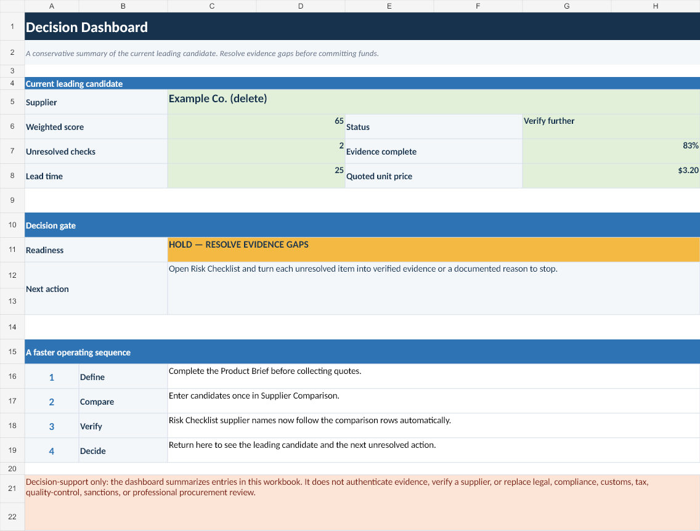
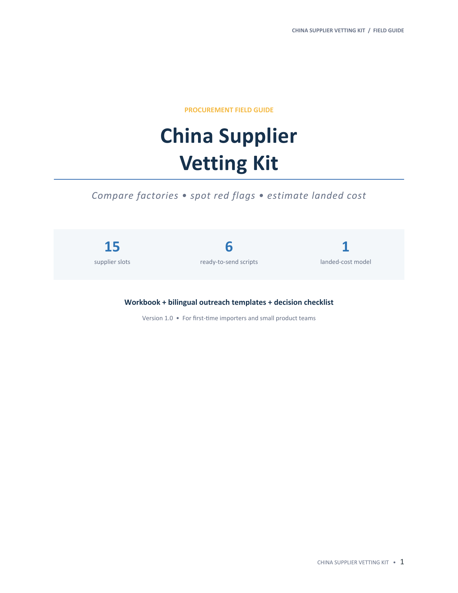
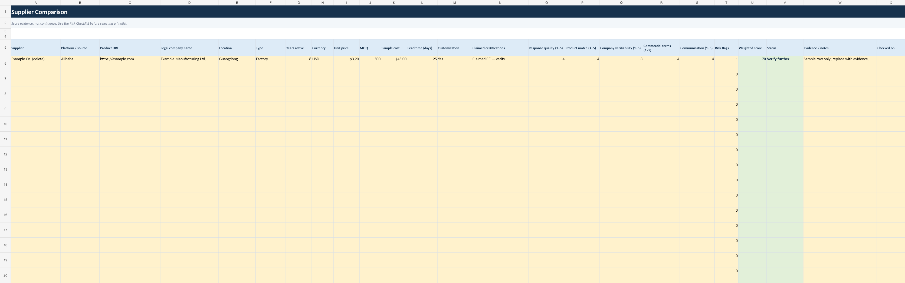
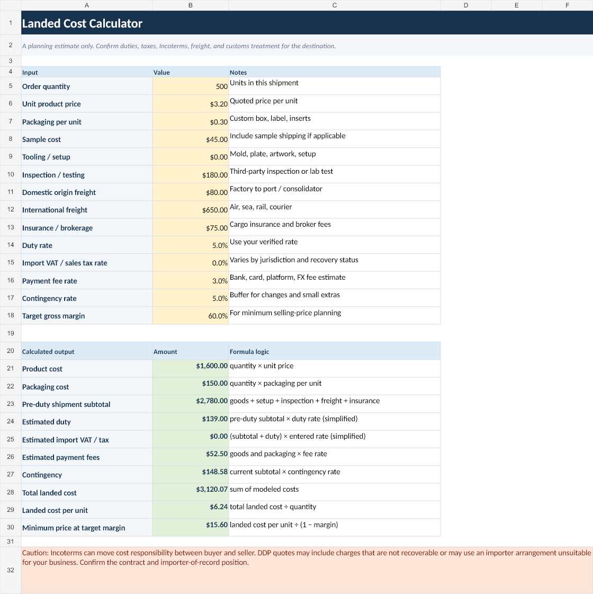

Evidence file
Direct outreach
Pearl River Mfg.
- Legal entityVerified
- Bank beneficiaryVerified
- Product documentsVerified
- Sample against briefVerified
- Quote & IncotermVerified
Field kit 01 · China sourcing
A structured workbook and field guide for comparing suppliers, surfacing red flags, and estimating landed cost before you commit to an order.
Supplier decision gate
Unit price is one line item.
Evidence quality is the decision.
Free decision check · no email required
Tick only what you can support with a document, live check, sample, or written term. The result stays in your browser and does not verify the supplier.
0 of 5 evidence gates cleared
Interactive sample
Switch between three fictional candidates. The lowest quote does not win when identity, documents, or payment evidence is still unresolved.
Fictional sample data for demonstration only. The workbook organizes your evidence; it does not authenticate a supplier.
A repeatable review
The kit keeps requirements, sources, scores, unresolved risks, and cost assumptions in one working file.
Document product requirements, tolerances, certifications, order terms, and evidence standards before comparing candidates.
Track entity details, documents, sources, payment warnings, and open questions without pretending uncertainty is a score.
Compare up to 15 candidates with visible weights, evidence notes, risk penalties, and estimated landed cost per unit.
Inside the files




Download manifest
Use recent desktop Microsoft Excel for the intended workbook experience. LibreOffice Calc can open the file with possible minor differences; the editable guide works in Microsoft Word or compatible editors.
Designed for
It does not provide a supplier directory, source products for you, verify suppliers automatically, guarantee an outcome, or replace customs, legal, tax, compliance, or inspection advice.
Free buyer guides
Use these practical checks before asking a supplier for more documents—or sending money.
Launch edition
One-time purchase. The download unlocks after Stripe confirms payment. No subscription.
Before you buy
No. It organizes your checks, evidence, assumptions, and decision trail. Verification and professional review remain your responsibility.
No. Use it for candidates found through marketplaces, trade fairs, directories, referrals, or direct outreach.
No. This is a buyer-managed decision toolkit, not a supplier directory, sourcing service, or list of endorsed factories.
Yes. The weights and risk penalty are visible in the workbook. Change them only when you understand how they affect the decision.
It is supplied as an XLSX file and designed for recent desktop versions of Microsoft Excel. LibreOffice Calc can open it, but minor formula or formatting differences may occur. Google Sheets is not a supported target.
The workbook now includes a Decision Dashboard and automatically links supplier names and unresolved risk counts between the comparison and checklist sheets, reducing duplicate entry.
The standard license covers personal use or internal use by one business. Redistribution, resale, sublicensing, and competing standalone products are not permitted.
Product support covers file-access issues and reproducible spreadsheet defects. Supplier selection, sourcing, negotiation, and compliance opinions are outside scope. Email product support, or use Link support for payment, order, or refund questions.